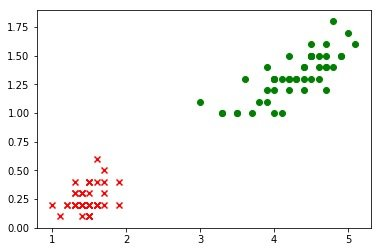
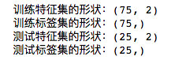

3. 数据预处理
3.1 导入依赖包
在 Codelab 目录中，复制模板文件 02_iris_linear_templete。
双击打开文件 02_iris_linear.ipynb ，首先进行依赖包的导入。
双击 导包 的单元格，导入以下依赖包：
- pandas
- matplotlib.pyplot
- numpy（ NumPy是用Python进行科学计算的基础软件包,是Python语言的一个扩展程序库。支持高端大量的维度数组与矩阵运算，此外也针对数组运算提供大量的数学函数库。）
- tensorflow （ TensorFlow是Google推出的一个开源机器学习库，可以用来建立和训练机器学习模型。）
- keras （ Keras是一个用Python编写的开源神经网络库，能够在TensorFlow、Microsoft Cognitive Toolkit、Theano或PlaidML之上运行。Keras旨在快速实现深度神经网络是一个基于用于构建和训练深度学习模型的高阶 API。它可用于快速设计原型、高级研究和生产。）
- sklearn 即scikit-learn，是一个基于Python的开源的机器学习库，提供多种分类，回归和聚类算法。 sklearn.model_selection.train_test_split 是分割数据集的函数
## 导包
import pandas as pd
import matplotlib.pyplot as plt
import numpy as np
import tensorflow as tf
from tensorflow.keras import layers
from sklearn.model_selection import train_test_split
3.2 导入 iris_bi.data.csv 数据集
将 data 文件夹下的 iris_bi.data.csv 文件读入到DataFrame对象中。
选中 2.导入新的数据集 单元格，插入新的代码单元格，输入以下代码：
datasets_path = 'data/iris_bi.data.csv'
iris = pd.read_csv(datasets_path,header=None)
print(iris.sample(5))
由于sample(5)是随机获取5条数据，一个可能的运行结果为：
可以看到数据正常导入了。
3.3 数据预处理
3.3.1 将数据转化为Numpy Array
TensorFlow 和 Keras 的模型在训练和测试时，通常使用Numpy ndarray类型的数据。（numpy ndarray) 提供了一个N维数组的类型，它描述了相同类型的项的集合。 可以使用例如整数的N来索引项目（items）。）
继续插入新的代码单元格，输入以下代码：
# 转换为np.array
iris = np.array(iris)
print(type(iris))
print(iris.shape)
np.array 函数可以将DataFrame对象转化为 Numpy 的 ndarray 类型。
以上代码的输出结果为：
3.3.2 可视化数据
对新的数据进行可视化分析，确定依据给定的特征可以对两种鸢尾花进行分类。
继续插入新的代码单元格，输入以下代码：
# 可视化
plt.scatter(iris[:49,0],iris[:49,1],marker='x',c='red')
plt.scatter(iris[50:99,0],iris[50:99,1],marker='o',c='green')
scatter函数用来绘制散点图，参数marker用来表示点的形状，参数c用来表示点的颜色
运行结果如下：

3.3.3 拆分特征和标签
在搭建和训练模型之前，将数据拆分成 特征 部分和 标签 部分。
继续插入新的代码单元格，输入以下代码：
# 拆分特征和标签
iris_X = iris[:,0:2]
iris_y = iris[:,-1]
print("特征集的形状：" + str(iris_X.shape))
print("标签集的形状：" + str(iris_y.shape))
iris[:,0:2] 中的方括号 代表numpy的切片运算，第一个：代表第一个维度的全部，0:2 代表第二维度从下标0开始，到2结束（不包括2）。所以，iris[:,0:2] 代表的含义是所有数据的前两列，iris[:,-1] 代表的含义是所有数据的最后一列。
运行结果如下：
3.3.4.拆分训练集和测试集
继续插入新的代码单元格，输入以下代码：
# 拆分训练集和测试集
X_train,X_test,y_train,y_test = train_test_split(iris_X,iris_y,test_size=0.25)
print("训练特征集的形状：" + str(X_train.shape))
print("训练标签集的形状：" + str(y_train.shape))
print("测试特征集的形状：" + str(X_test.shape))
print("测试标签集的形状：" + str(y_test.shape))
运行结果如下：

参考文献
1.Numpy https://www.numpy.org/
2.Numpy中文文档 https://www.numpy.org.cn/
3.NumPy https://zh.wikipedia.org/wiki/NumPy
4.TensorFlow https://zh.wikipedia.org/zh-hans/TensorFlow
5.Keras https://zh.wikipedia.org/wiki/Keras
6.Scikit-learn https://scikit-learn.org/stable/index.html
7.数组(Arrays) https://www.numpy.org.cn/article/basics/python_numpy_tutorial.html#%E6%95%B0%E7%BB%84(Arrays)
8.数组对象 https://www.numpy.org.cn/reference/array_objects/index.html